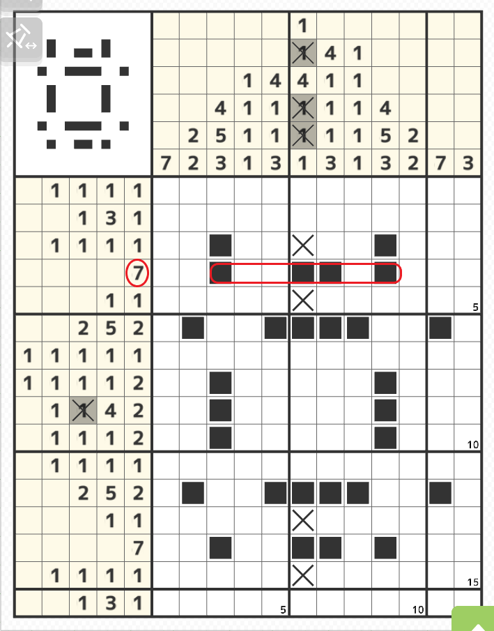
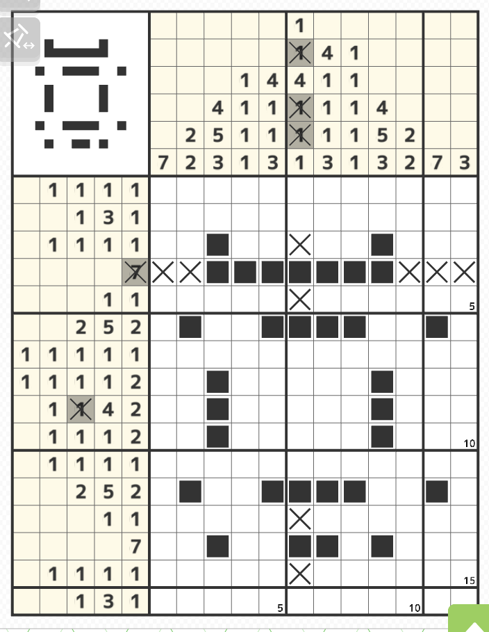
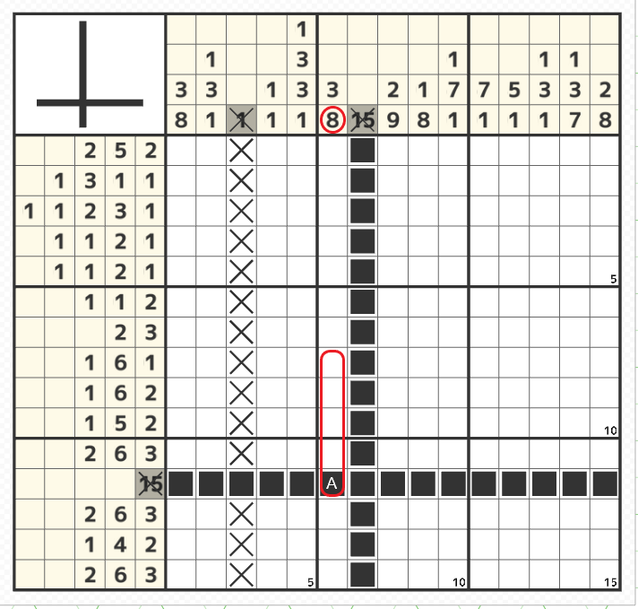
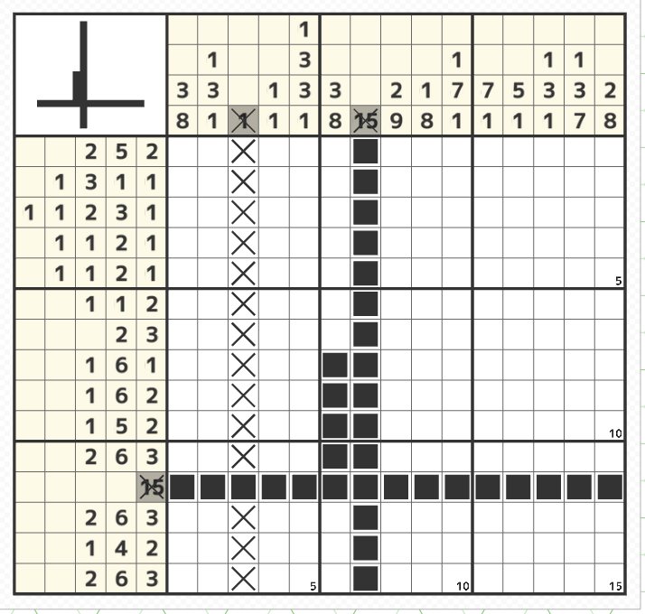

どのヒントのパーツかを考える

- 塗り始めていくと上図のようにマスが飛び飛びに塗られていく場面が出てくる
4行目のヒントは「7」一つだけなので、すでに塗られている4マスは全て7の連なるパーツの一部ということになる。
つまり赤線の範囲は塗ることができる
このように縦のヒントから塗られた場所が横のヒントのどのヒントの数なのかがわかってくると自然に塗れるところが増えてくる。（横から縦も同じ）


- 左側のヒントの12行目のヒントの数が範囲の数と一致して全て塗られている状態から6列目のヒントを見るとすでに塗られた部分A（14行目6列目）が「3」か「8」のパーツのどちらかになるわけだが仮にAが「3」と仮定した場合、その下に1マス空けてその下に8マス入れたいが入らない
よって8のパーツになることがわかる。
更に一番下から上に向かって塗られたとしても、Aから始まって上に塗られたとしても、赤線の範囲は必ず塗られるということになる
